С 27 сентября 2026 года по телефонам 1–5 зафиксирован рабочий результат фермы: ежедневная публикация, сбор статистики и два прогона 8 октября. В записи вошли регистрация облачного профиля и прогрев физических телефонов. Ниже сначала цифры среза, затем полный состав функций панели, включая режимы, которых на этих записях нет.
Результат среза
Instagram: 5 102 просмотра, 88 рилсов, 226 лайков, вовлечение 4,8%. TikTok по заведённым аккаунтам: 1 589 просмотров. Предыдущий тест: 1 957 просмотров на пяти публикациях. Текущий срез выше и по охвату, и по числу вышедших роликов.
Рост получен при ежедневной публикации уникального ролика на каждый аккаунт. В этом окне 88 рилсов, каждый вышел на одном аккаунте. Сумма просмотров выросла с 1 957 до 5 102.
Основные аккаунты Instagram: @more_pesok_resort — 2 330 просмотров, @pesok.more.hotel — 1 486, @vikamoreipesok — 1 260. Наибольшие дневные суммы: 28 сентября — 1 220, 29 сентября — 1 237. 3 октября TikTok добавил 1 504 просмотра.
Время публикации рекомендуется назначать отдельно каждому аккаунту. По этому срезу у @more_pesok_resort сильнее 14:00 и 18:00, в среднем 205 и 159 просмотров. У @pesok.more.hotel — 16:00 и 12:00, в среднем 157 и 123. У @vikamoreipesok — 13:00 и 17:00, в среднем 149 и 133.
Функционал фермы
Задачу выполняют два контура: физические телефоны и облачные профили AdsPower. Остановка снимает обе очереди. Состояние видно на живой карте: телефоны, аккаунты, текущая задача и зеркало экрана. Перед работой на телефоне поднимаются Wi-Fi и подписка Happ.
Раздел
Функция
Что выполняет
Публикация
Полная задача
Прогрев перед слотом, затем 1–3 видео на заданное время и сбор статистики. Ролик общий для всех или свой у каждого аккаунта. Указываются бренд и креатор. Файл уникализируется. Instagram можно публиковать через Edits, TikTok — через Studio.
Публикация
Прогрев
Лента Instagram, TikTok или YouTube от 1 до 240 минут. Просмотр либо действия с заданной вероятностью: лайк, подписка, комментарий. Телефоны запускаются волнами.
Публикация
Выгрузка
Один ролик: описание, хэштеги, бренд, креатор, уникализация и зеркало экрана на время публикации.
Публикация
Статистика
Просмотры, лайки, комментарии, репосты, сохранения, охват и удержание, если экран сети их отдаёт. Метрики сверяются со скриншотом и передаются на клиентский портал.
Публикация
Расписание
Именованные сценарии: время старта и цепочка шагов. У каждого шага свои телефоны и облачные профили. Заготовки хранятся отдельно от запущенного плана.
Вовлечение
Спецдействия
По списку целей: подписка, лайки последних роликов, комментарий, репост, копирование ссылки, сохранение. Перед лайком задаётся длительность просмотра. Пересылка выполняется только между своими аккаунтами.
Вовлечение
Живой цикл
Непрерывные сессии: лента, рекомендации, свой профиль, лайк своих публикаций. Сообщения уходят только между выбранными аккаунтами.
Вовлечение
Подписчики цели
Подписка на подписчиков указанного аккаунта в Instagram и TikTok.
Вовлечение
Свои аккаунты
Лайки и комментарии внутри выбранной группы одного бренда.
Вовлечение
Вирусные
Комментарии к роликам фермы с высоким числом просмотров. Текст готовит модель или берётся из библиотеки «Юмор».
Аккаунты
Оформление
Проверка профиля со скриншотом, имя, описание и фото по карточке бренда. Отдельно для телефонов и для AdsPower.
Аккаунты
Вход и регистрация
Только облако AdsPower. Регистрация ведёт профиль сама: обычные сайты, вход в Google, анкета Instagram, ожидание кода из письма, затем TikTok и YouTube из той же сессии и прогрев после регистрации.
Сервис
Уникализация
Отдельная копия ролика под каждый слот. Движки ffmpeg и OpenCV, есть автоматический режим.
Сервис
Отчёты
Журнал отсутствующих аккаунтов и сервисные выгрузки.
Сервис
Устройства и связь
Перезагрузка подключённых телефонов. Статический прокси на облачный профиль. Telegram-бот ставит в панель прогрев, публикацию, статистику, вовлечение и аудит. Агент передаёт метрики и снимки на клиентский портал.
Записи 8 октября подтверждают регистрацию профиля и старт прогрева первой волны телефонов. Полная задача, выгрузка, статистика, расписание, вовлечение, оформление, уникализация, отчёты, бот и портал в эти ролики не входили и перечислены по действующему составу панели.
Ролики набирают просмотры, ферма проходит регистрацию сама
В отчёте только аккаунты, которые реально заведены. Пустые YouTube и TikTok убраны. Цифры — последний замер каждого ролика, опубликованного с 27 сентября включительно.
5 102просмотра Instagram
1 589просмотра TikTok, где аккаунт есть
4,8%вовлечение Instagram
88рилса Instagram за срок
Ролик с отметкой 2 000 просмотров
Тысяча из этих двух тысяч — накрутка. Для сравнения и для выводов берём 1 000 живых просмотров. Накрученный хвост в органику не складываем.
Рабочие аккаунты
Телефон
Ник
Роликов
Просмотры
Лайки
Вовлечение
1
@pesok.more.hotel
15
1 486
99
6,7%
2
@alinochkamore
18
26
2
15,4%
3
@vikamoreipesok
19
1 260
32
3,2%
5
@more_pesok_resort
19
2 330
93
4,4%
Instagram. Телефон 4, @lanapamorepesok, в этом окне выкладывал, но последний замер ещё без просмотров — в таблицу лидеров его не ставлю. TikTok с ником есть у @vikamoreipesok и @lanapamorepesok, плюс почтовый вход телефона 2: вместе 1 589 просмотров, из них 869 у Ланы и 720 у телефона 2. YouTube с ником есть только у @vikamoreipesok, в этом срезе он почти не публиковал.
Что уже хорошо
Три аккаунта держат охват: @more_pesok_resort, @pesok.more.hotel и @vikamoreipesok. Пик Instagram пришёлся на 28–29 сентября: 1 220 и 1 237 просмотров за день публикации. 3 октября TikTok добавил ещё 1 504 просмотра. Это уже не нулевой старт прошлого теста.
Как ферма создаёт аккаунт
Запись 8 октября, профиль 84, шесть минут сорок секунд. Скрипт ведёт окно сам, а панель справа показывает каждый шаг. Увеличенная копия записи: Videos\2026-10-08 12-04-08_hq.mp4.
Шаг 1
Задача стартует сразу в своём профиле
Панель открывает пакетную регистрацию и пишет журнал на диск. Профиль 84 идёт через свой статический прокси, без лишней смены IP. Окно браузера поднимается рядом, кнопка остановки уже на экране. Оператор видит и браузер, и лог одновременно.
Шаг 2
Перед почтой профиль смотрит обычные сайты
Скрипт сам открывает девять нейтральных страниц и спокойно их пролистывает: Wikipedia, Reuters, BBC, Smithsonian, National Geographic, Pexels, OpenStreetMap, Britannica, Unsplash. Рекламу и формы не трогает. К моменту входа в Google у профиля уже есть обычная история, а не пустое окно.
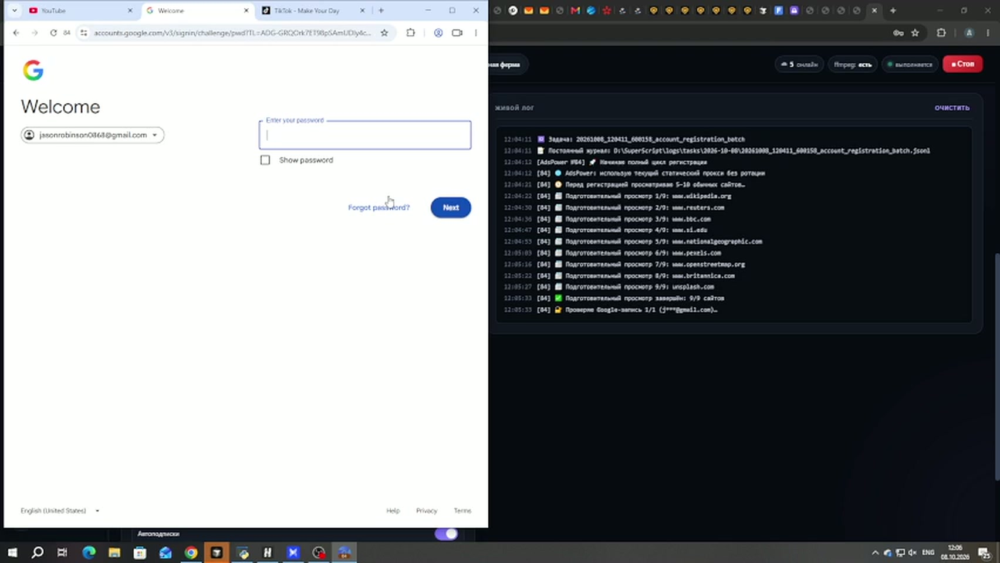
Шаг 3
Google входит по одной заданной почте
В логе одна запись из одной, без чужого пула. Скрипт доходит до пароля и отправляет его кнопкой Next. Почта на экране та, которую задали в задаче.
Шаг 4
Код Google уходит сам, форма Instagram уже собрана
Двухэтапный код скрипт считает локально и вводит сам. Дальше Instagram получает готовую анкету: почта, пароль, дата рождения, имя Olivia Brooks и ник olivia.brooks7429. Дата в журнале — 1 ноября 1998. Пароль нового аккаунта остаётся в защищённой базе и в лог не попадает.
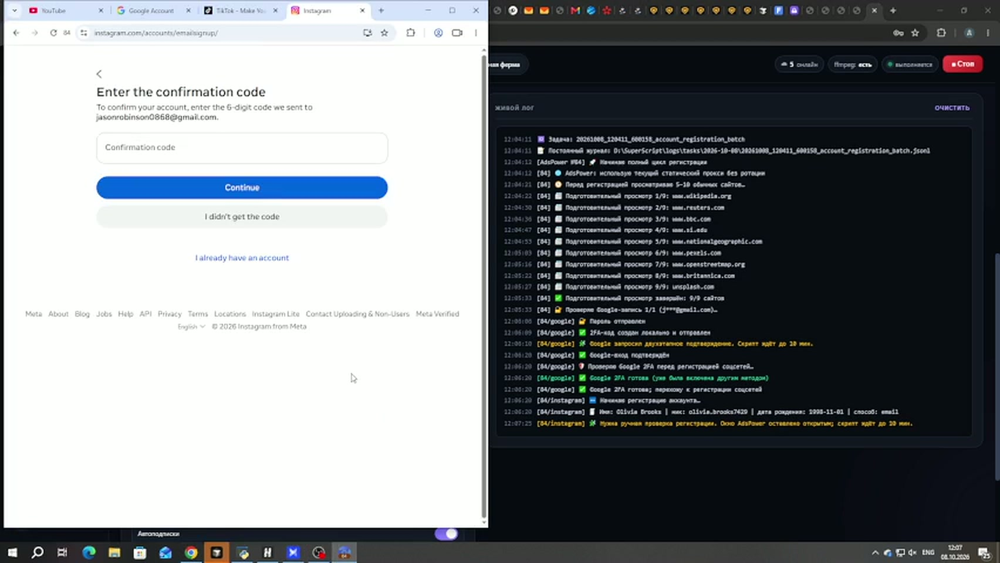
Шаг 5
Код с почты ждёт в открытом окне
Когда Instagram просит шестизначный код, окно не закрывается. Скрипт оставляет AdsPower на экране и ждёт до десяти минут. Так и задумано: письмо и проверка остаются на стороне человека, сценарий после этого продолжает сам. В этом прогоне код пришёл, проверка прошла, Instagram закрылся как готовый аккаунт.
Шаг 6
Следом открывается TikTok той же почтой
После Instagram скрипт не начинает всё заново. Он открывает TikTok, выбирает вход через Google и ту же почту, снова отправляет локальный код. Имя и дата рождения уже подготовлены. Оператор видит и ленту, и подтверждение доступа в логе.
Шаг 7
Дата рождения на TikTok уже стоит в форме
На экране месяц, день и год, кнопка Next активна. Форма доведена до отправки. Дальше сценарий не бросает профиль: Google-сессия подключается к YouTube, и сразу начинается спокойный прогрев Instagram, только просмотр, десять минут.
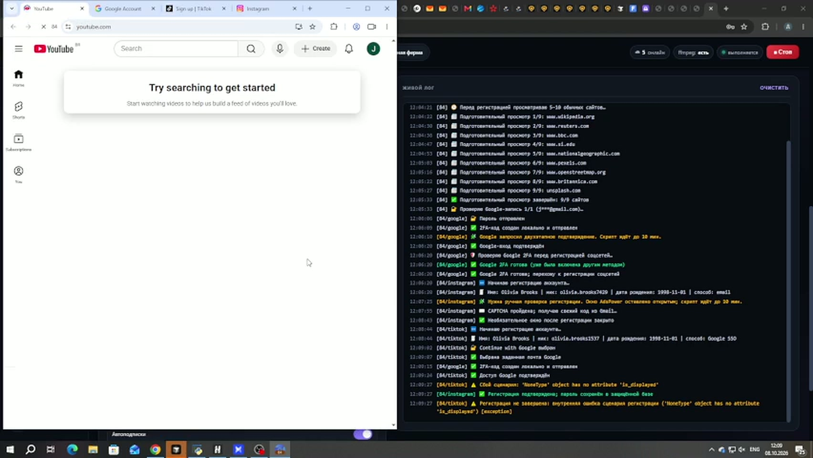
Шаг 8
YouTube берётся из уже вошедшего Google
Отдельной анкеты нет. Канал открывается тем же входом, главная YouTube уже живая. В одной задаче оператор получает почту, Instagram, подготовку TikTok и сессию YouTube, а лог справа остаётся читаемым до конца прогрева.
Как ферма прогревает телефоны
Вторая запись того же дня, 14:03, три минуты двадцать пять секунд, уже в 1920×1080. Это старт прогрева Instagram на физических телефонах: очередь, Happ, зеркало экрана и первая лента Reels. Полные пятнадцать минут в ролик не вошли — на плёнке виден механизм, по которому волна входит в работу.
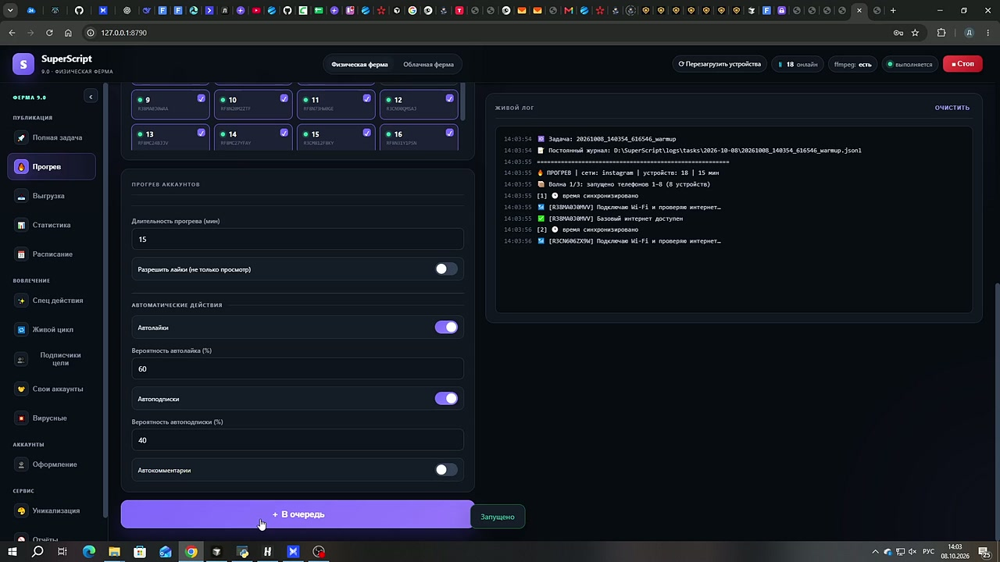
0:12 · шаг 1
Задача уходит в очередь одной кнопкой
Раздел «Прогрев», длительность 15 минут, кнопка «В очередь». Журнал сразу пишет задачу: Instagram, 18 устройств, 15 минут. Первая из трёх волн поднимает восемь телефонов, 1–7 и 9. Кнопка «Стоп» уже на панели.
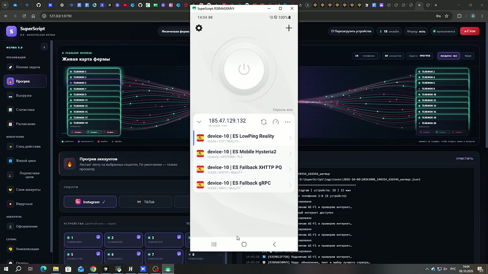
0:24 · шаг 2
Телефон 1 показывает свою подписку Happ
Зеркало R38MA0J0MVV. Подписка 185.47.129.132 и серверы device-10: LowPing Reality, Mobile Hysteria2, Fallback XHTTP, Fallback gRPC. Часы на экране свежие, заряд полный. Скрипт сначала обновляет список, потом меряет его.
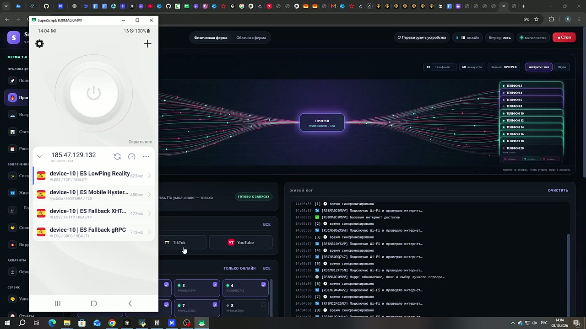
0:36 · шаг 3
Пинг виден на карточках, выбор уходит в журнал
У серверов device-10 на экране свои задержки. Для телефона 1 журнал выбирает ES Mobile Hysteria2, 450 мс. Телефоны с уже проверенным сервером подключаются сразу и ставят следующее обновление подписки через несколько часов.
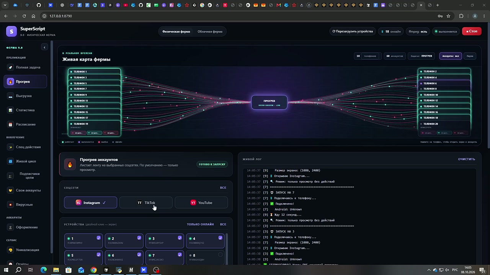
2:00 · шаг 4
После VPN скрипт открывает Instagram
Wi-Fi проверен, Happ поднят в режиме VPN. Дальше подключение к экрану 1080×2400, запуск Instagram и нажатие Reels. Режим этой задачи — просмотр. В шапке панели по-прежнему 18 онлайн, задача в статусе «выполняется».
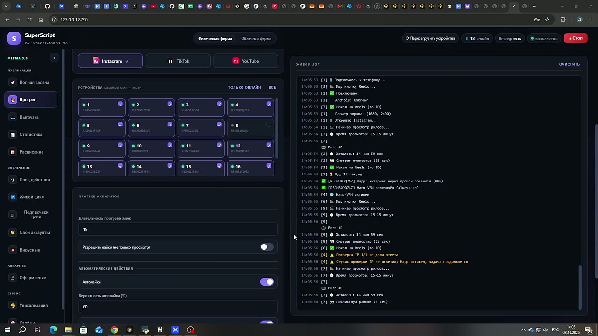
2:12 · шаг 5
Лента уже идёт, и каждый шаг виден справа
«Рилс #1», осталось 14 минут 59 секунд. Ролик либо досматривается целиком, либо листается раньше: в кадре есть и «смотрит полностью», и «пролистнул раньше». Телефон 4 в эту же минуту дожимает VPN и тоже входит в Reels. Если внешняя проверка IP молчит, Happ уже активен, и просмотр продолжается.
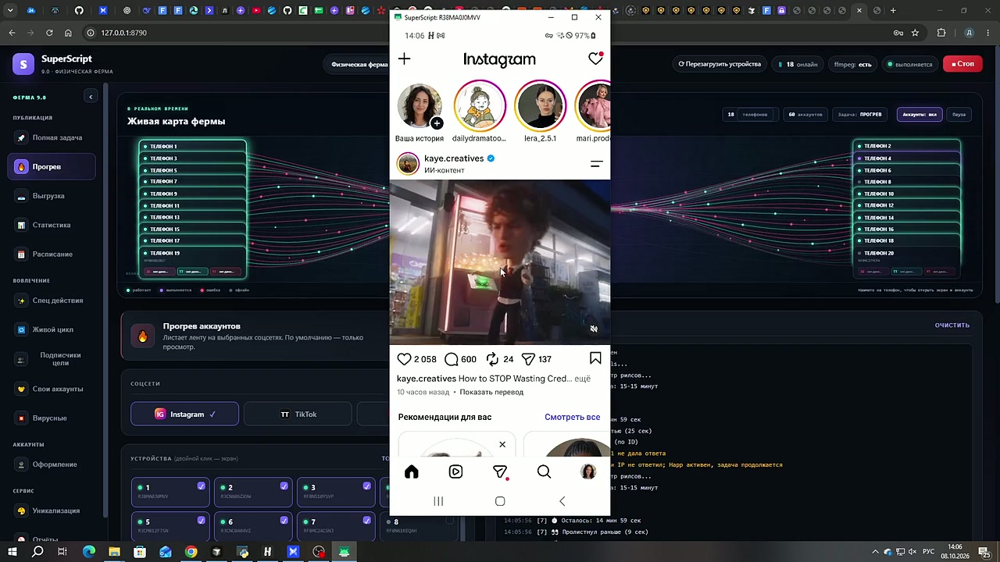
2:24 · шаг 6
Зеркало телефона 1 показывает живую ленту
Окно SuperScript R38MA0J0MVV. На экране Instagram: истории, ролик и блок рекомендаций. Оператор видит тот же экран, который листает скрипт. Карта фермы слева остаётся в режиме прогрева.
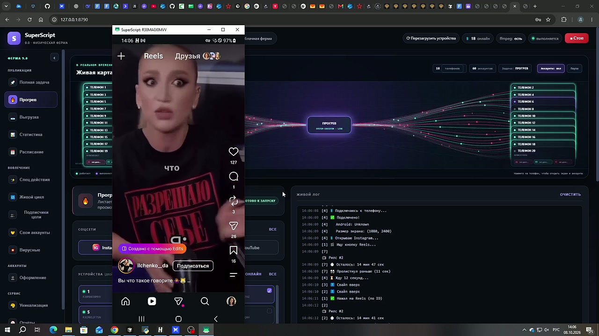
2:36 · шаг 7
Телефон уже на следующем рилсе
Лента Reels сменила ролик. В журнале рядом — «свайп вверх» и «Рилс #2», остаток времени всё ещё около пятнадцати минут. Пауза между роликами короткая, волна не ждёт конца чужого просмотра.
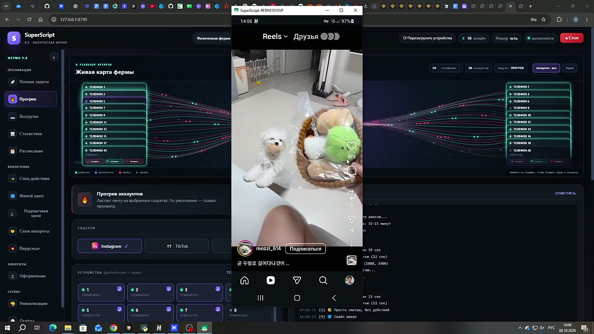
3:00 · шаг 8
Телефон 3 смотрит свою ленту в той же волне
Окно RF8N510YSVP. Свой Reels и своя кнопка подписки на экране. К концу записи первая волна уже листает ролики параллельно. Вторая и третья волны в эти три минуты ещё не стартовали: скрипт берёт телефоны пачками, чтобы не поднимать все восемнадцать разом.
Как поднять просмотры
Держать ежедневный пуш: каждый день свой ролик, и на каждый аккаунт своя копия. В этом срезе так и шло — 88 рилсов, каждый вышел только на своём аккаунте. Просмотры от этого режима выросли: прошлый тест дал 1 957, текущая ежедневная выкладка — 5 102.
Время поста смотреть отдельно по каждому аккаунту. Общий слот на всех ловит разные окна. У @more_pesok_resort сильнее 14:00 и 18:00, в среднем 205 и 159 просмотров. У @pesok.more.hotel — 16:00 и 12:00, в среднем 157 и 123. У @vikamoreipesok разовые пики в 13:00 и 17:00, 149 и 133. Час, который везёт одному, у соседа может быть пустым.
Дневные слоты отдавать аккаунтам, которые уже разносят ленту: @more_pesok_resort держит около 450 просмотров в день, дальше @pesok.more.hotel и @vikamoreipesok. У @lanapamorepesok в этом срезе 17 рилсов и ноль просмотров — пока первый отклик не появится, слот этого телефона спокойнее отдать прогреву.
Лучший ролик дня ставить первым и с зазором в несколько часов до следующих. В день с тремя публикациями объём собирает один рилс: 28 сентября у телефона 1 это 299 из 747, у телефона 5 — 287 из 460.
В день со слабым материалом публиковать один рилс. 5 октября единственный ролик @vikamoreipesok взял 192 просмотра — рядом с лучшими одиночными роликами дней, когда выкладывали по три.
Перед выкладкой оставлять тот прогрев, который уже идёт на телефонах: своя подписка Happ, 15 минут Reels, живая лента. Охват в срезе как раз у аккаунтов с этой историей просмотра.
На TikTok добавлять отдельные ролики. 3 октября эта сеть дала 1 504 просмотра, и там каждый ролик считается сам по себе: дополнительный слот увеличивает шанс, а в Instagram лишний ролик в тот же час делит внимание одного аккаунта.
После спада на следующий день оставлять один слот лидеру. Пик Instagram был 28–29 сентября, 1 220 и 1 237 просмотров за день публикации. К 5 октября дневная сумма опустилась до 193 — в такой день повтор вчерашней тройки просмотры не возвращает.